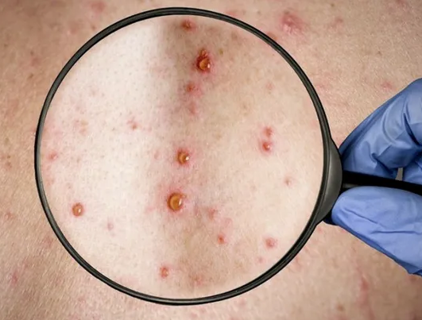
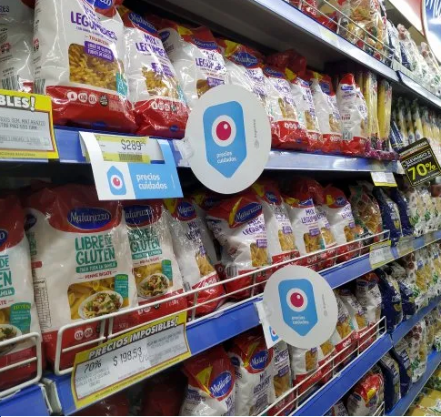
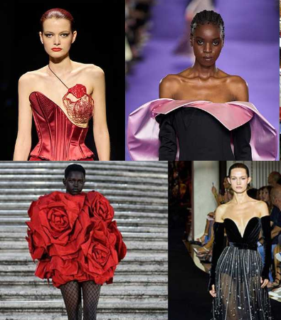
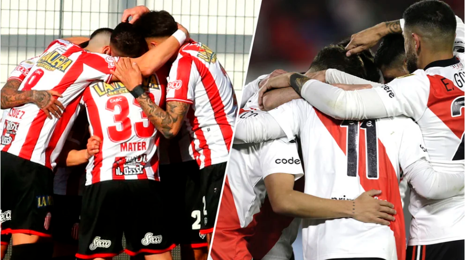
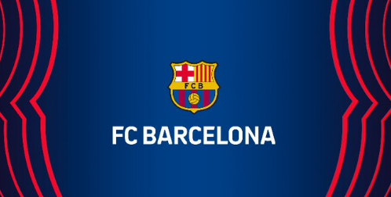
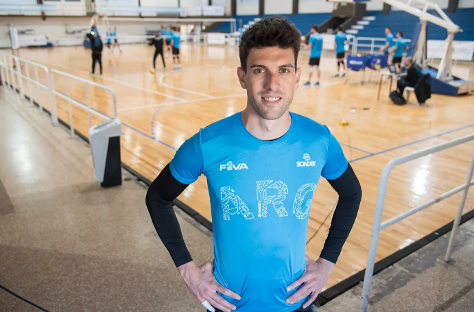
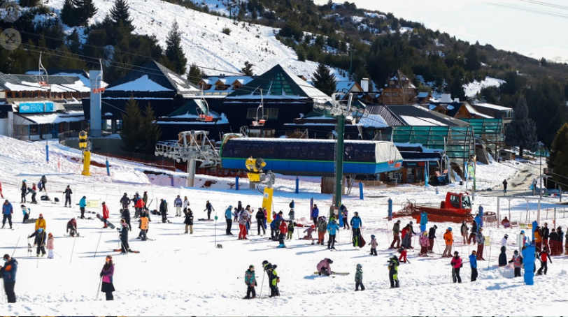
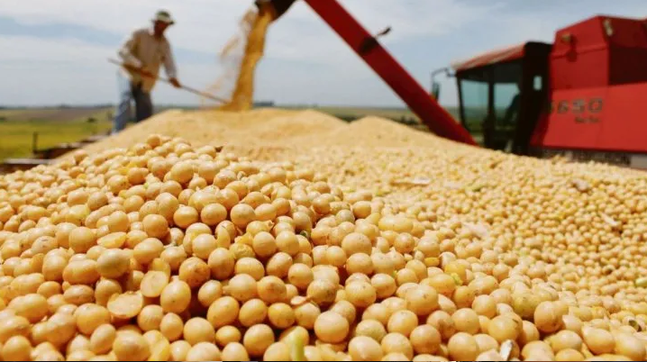
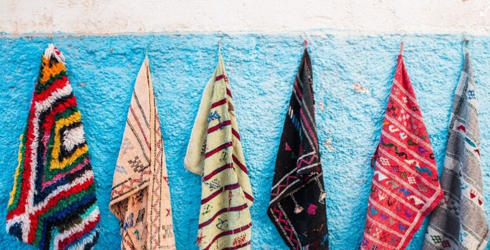

Destacados
Viruela del mono: confirmaron tres nuevos casos en Argentina
Precios Cuidados: el abastecimiento cayó al 50% en las góndolas
Los mejores vestidos de la Semana de la Moda de Alta Costura FW 2022
KRÜ cayó ante OpTic Gaming y fue eliminado del Masters de Copenhague
Netflix lanzó una función para ver películas y sentirse en el cine: cómo activarla
Deportes
Las Leonas derrotaron a Inglaterra por 1 a 0 y se clasificaron para las semifinales del Mundial de España y Países Bajos

Con un golazo de Casco, River Plate le gana a Barracas Central por la Copa Argentina
¿Por qué el póker fue considerado "Deporte Mental" en nuestro país?
Oficial: el Barça anuncia al jugador brasileño proveniente del Leeds Raphinha
El Kun Agüero analizó el golazo de su hijo Benjamín en Tigre y confirmó que debutará oficialmente en otro deporte
La Liga Argentina de Voleibol vuelve a tener 12 equipos después de diez años y un imán poderoso: Facundo Conte
Pais
Cuáles son los dos destinos de Argentina que la revista Time recomienda visitar

Compiten Alemania y Francia por dotar a la Argentina de submarinos
En tres años, 17 aerolíneas abandonaron la Argentina y se perdieron 18 destinos
Más de 2,5 millones de turistas extranjeros visitaron Argentina en 2022
Argentina vive una masiva huelga de agricultores por 24 horas
¿España o Argentina? Lali Espósito reveló en que país tuvo sus mejores citas y sorprendió a todos
Economia
Economía todavía no designó al funcionario que llevará adelante la segmentación de tarifas energéticas
Cómo afectará la alta inflación de EEUU a la Argentina: cuatro indicadores para tener en cuenta
La soja y el maíz retomaron el camino alcista (alivio para economía local)
Dólar hoy: cuál es el precio de la moneda el 13 de julio
Libre comercio: España se suma a la ofensiva que exige un impulso a los acuerdos
Jubilados: en 10 días vence la moratoria para las mujeres y hay dudas sobre su prórroga
Moda
Ruanas, chales y ponchos baratos y de gran calidad: las prendas de moda
Estas son las series que están de moda en Amazon Prime Estados Unidos este día
Estos son los temas que están de moda hoy en Spotify México
LOOKS (Y CONSEJOS) DE MODA PARA VESTIR BIEN DURANTE UNA OLA DE CALOR
Las 15 tendencias que ha marcado la Semana de la Moda de París
Estas son las canciones que están de moda hoy en Spotify Perú
Gaming
Las ofertas de última hora en Gaming y videojuegos que no te puedes perder del Prime Day 2022